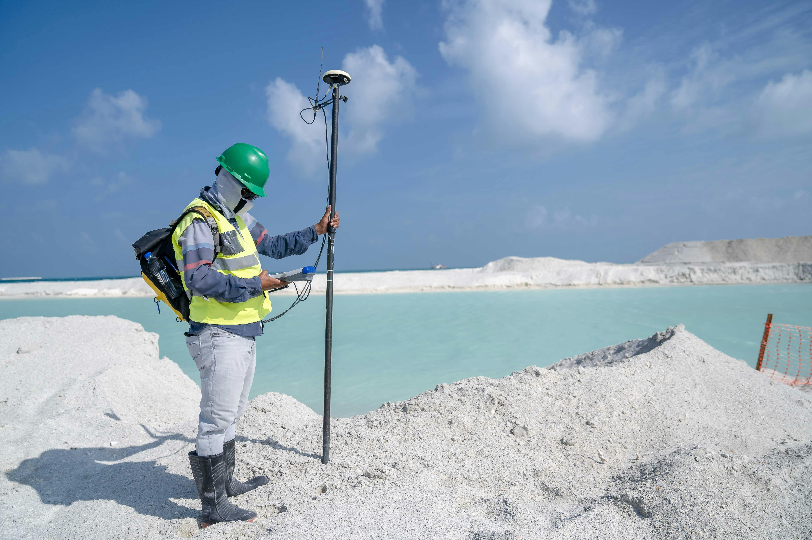
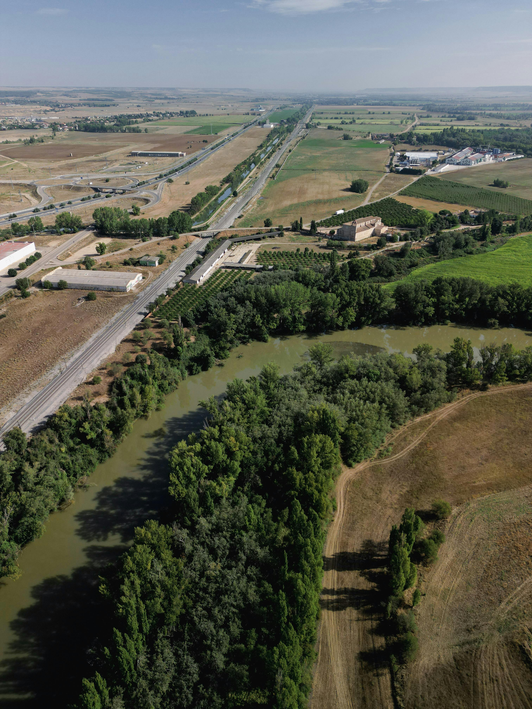
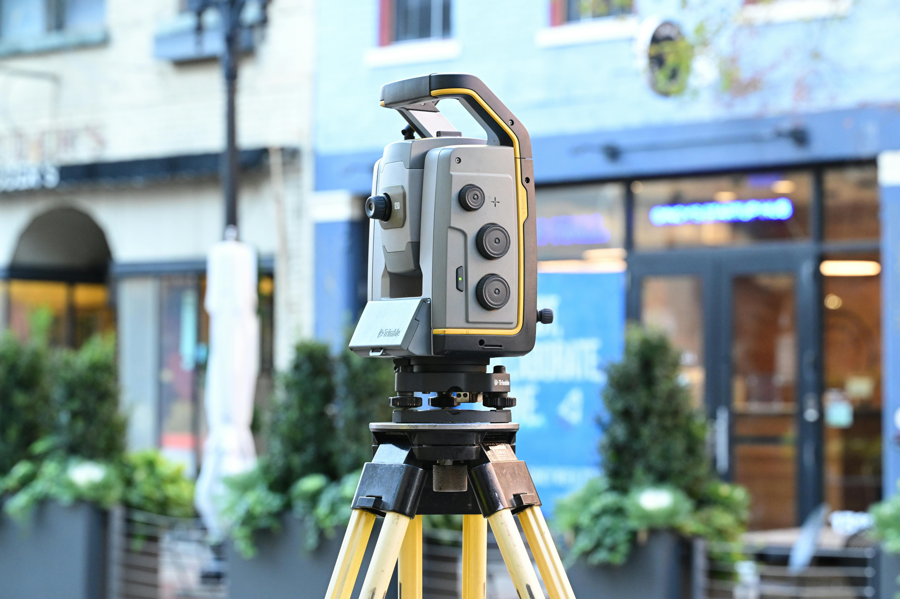
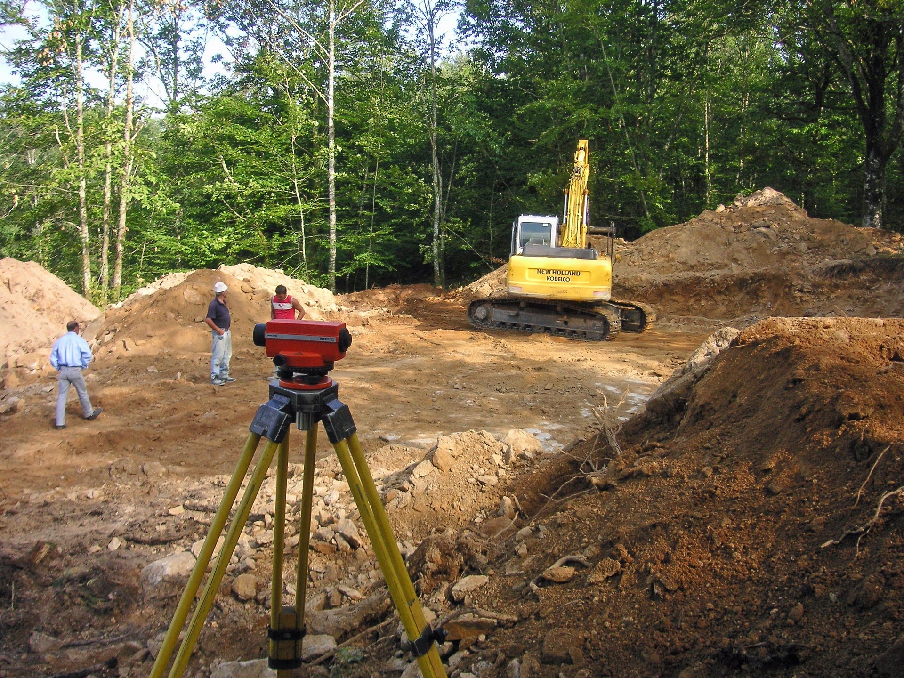
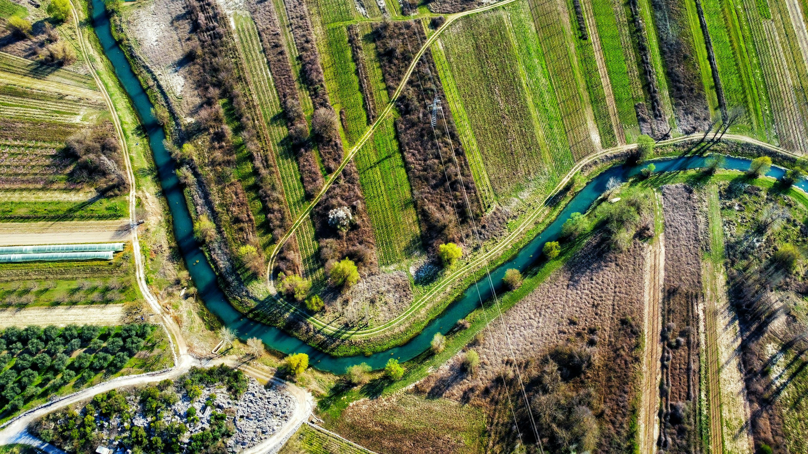
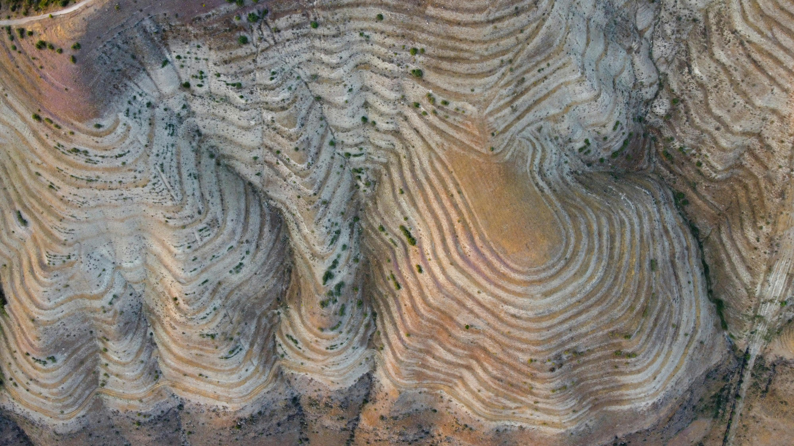
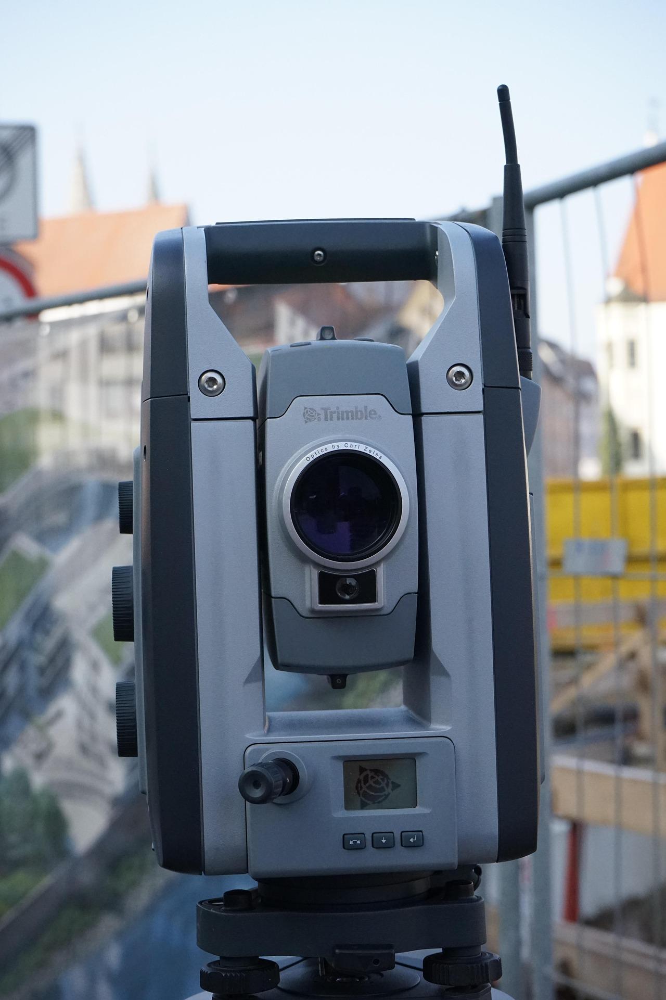

Levantamientos catastrales
Parcelas, segregaciones y documentacion tecnica.
Ingenieria topografica de alta precision
Soluciones tecnicas para catastro, obra civil, agricultura de precision, fotogrametria con drones y escaneo laser 3D. Entendemos tu proyecto, recopilamos los datos criticos y preparamos una base tecnica clara antes de presupuestar.
Recogemos ubicacion, superficie, tipo de proyecto y nivel de detalle para ofrecer una propuesta coherente con el terreno.

Parcelas, segregaciones y documentacion tecnica.
Ortofotos y modelos 3D de alta resolucion.
Replanteos, control geometricos y seguimiento.
Nubes de puntos y gemelos digitales precisos.
Servicios especializados
Trabajos de campo y gabinete para definir parcelas, superficies y documentacion tecnica asociada.
Base cartografica para proyectos constructivos, replanteos y control de ejecucion en obra.
Captura aerea de alta precision para ortomosaicos, modelos de elevacion y seguimiento de grandes superficies.
Modelado detallado de entornos complejos con densidad de datos superior para analisis y coordinacion tecnica.
Analisis espacial para mejorar decisiones sobre riego, drenaje y optimizacion de explotaciones.
Generacion de MDT, MDE, perfiles longitudinales y curvas de nivel adaptados a cada proyecto.
Como trabajamos
El asistente esta preparado para conversar de forma profesional, entender el alcance del proyecto y recoger unicamente los datos imprescindibles antes de plantear una propuesta.
Obra civil, catastro, agricultura de precision, fotogrametria o escaneo 3D.
Ubicacion, extension del terreno y entregables requeridos para dimensionar el trabajo.
Si el cliente tiene dudas, explicamos de forma sencilla la mejor tecnologia para su caso.
Sin improvisar precios ni emitir asesoramiento legal sobre linderos.
Entorno real de trabajo
Integramos escenas de campo, obra y captura geoespacial para dar a la marca una presencia mas profesional, creible y cercana.





Entregables tecnicos
Representacion precisa de la morfologia del terreno para estudios y proyectos.
Datos geoespaciales listos para analisis tecnico y toma de decisiones.
Documentacion avanzada para activos, infraestructuras y grandes superficies.

Captacion de consultas
Esta seccion ya queda preparada para registrar oportunidades reales. El agente puede usar estos mismos campos para conversar, vender el servicio con criterio tecnico y guardar cada consulta en Google Sheets.
Asistente comercial-tecnico
El objetivo no es dar un precio improvisado, sino dejar una base clara para evaluar el proyecto, priorizar el lead y continuar el contacto comercial con informacion util.
Guia de comportamiento del agente
Isa debe hablar con cercania, seguridad y autoridad tecnica. Puede recomendar el siguiente paso mas adecuado, explicar el valor del levantamiento topografico o de la captura con drones y ayudar a cerrar la toma de datos, pero sin dar precio final ni asesoramiento legal sobre linderos o propiedad.
Contacto y redes
He dejado una version ficticia pero coherente para que la web ya tenga presencia completa. Luego solo habra que sustituir estos datos por los definitivos.

contacto@isatoposolutions.com

@isatoposolutions

IsaTop Solutions

+34 612 345 678

Jaen, Granada, Cordoba y proyectos tecnicos en toda Espana.
La maqueta ya incorpora un ecosistema de contacto creible y profesional para presentar la marca con mas solidez mientras se definen los datos reales.